Early Summer (1951, 麦秋) is usually regarded as the film in which Ozu’s style is most fully realized. We use it as a case study, paired with Shigehiko Hasumi’s Directed by Yasujiro Ozu (UC Press, 2024), to shift the question from “what is Ozu’s style?” to “what does that style reveal about cinema itself?”
Hasumi’s claim runs through the whole session: cinema has no “grammar,” only limits, the things it physically cannot show. Most films stay watchable by concealing those limits; Ozu instead exposes them, which is why Hasumi calls him “among the freest of filmmakers” (HS, p. 151). His constraint is not poverty of expression but freedom from the obligation to hide.
Throughline: constraint as freedom, and what Hasumi calls “movement in stasis” (P, p. 5) — learning to watch a film as more than the “space between events.”
Early Summer was directed by Yasujiro Ozu in 1951. We can see Ozu’s fully developed style here; it is often considered to have most of his cinematic styles realized in this film.
Hasumi (2024) argues that, far from being a stylist who narrowed his vocabulary, Ozu should be considered “among the freest of filmmakers” precisely because he devotes himself to constraint and in doing so makes the limits of cinema itself conspicuous (HS, p. 151). What he “sacrificed” were not means of self-expression but the constraints cinema imposes (HS, p. 151).
Ozu is known for his stylistic obsessions about how things are placed on the screen.
Hasumi calls the underlying logic “movement in stasis”: a shot may appear static, but its plurality of elements “might at any moment bring stark tensions to life, slicing at the eye or disorienting the look” (P, p. 5).
Ozu is known for his stylistic obsessions about how things are placed on the screen.
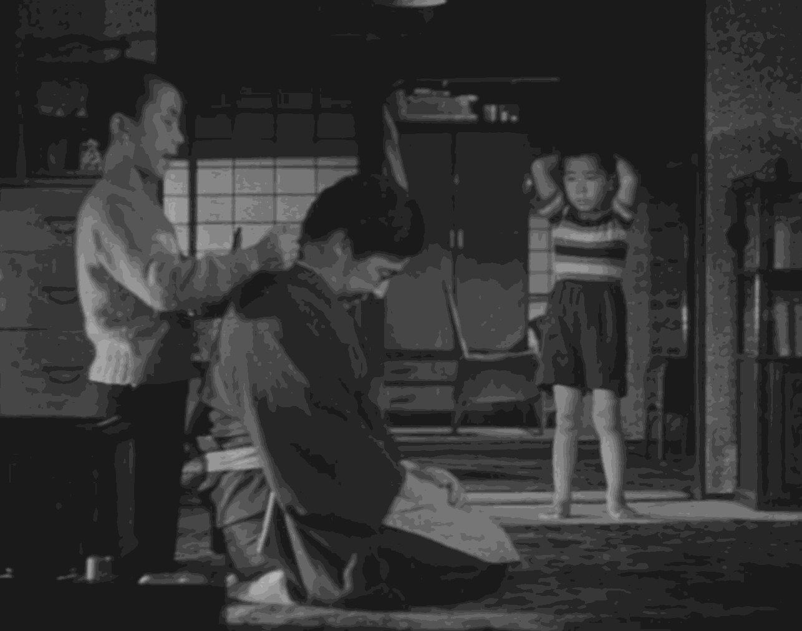
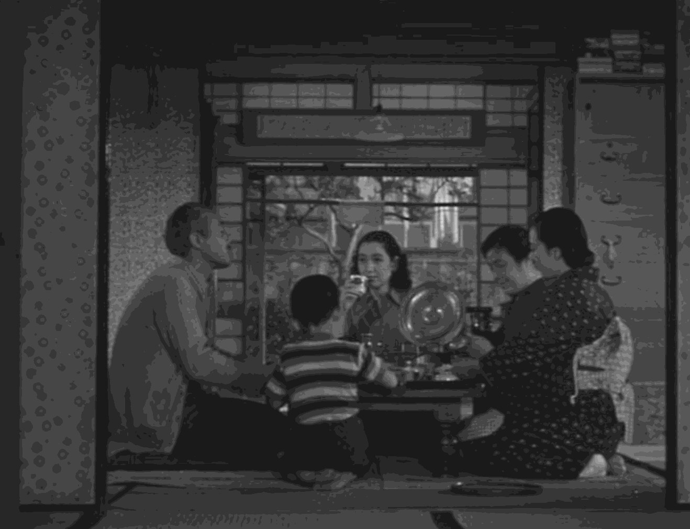
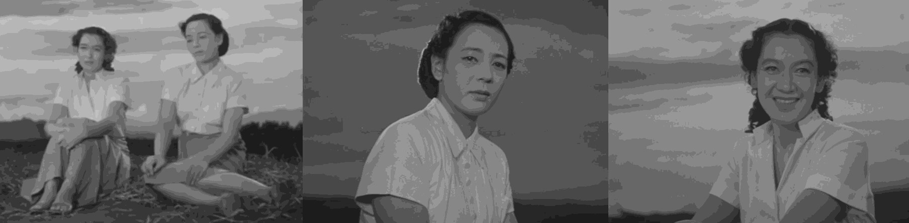
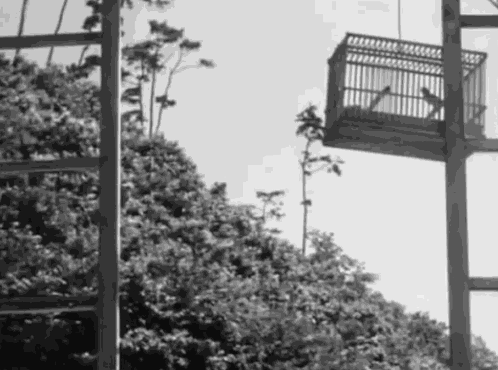
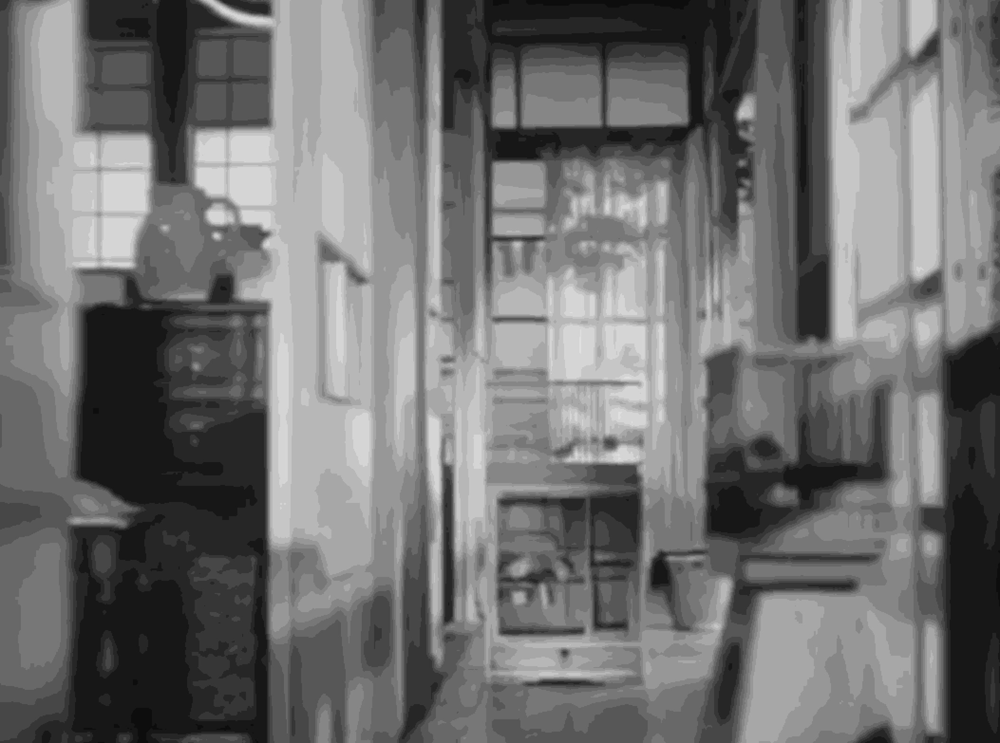
Ozu is known for his stylistic obsessions. Sometimes he goes beyond the plot continuity in a conventional way.
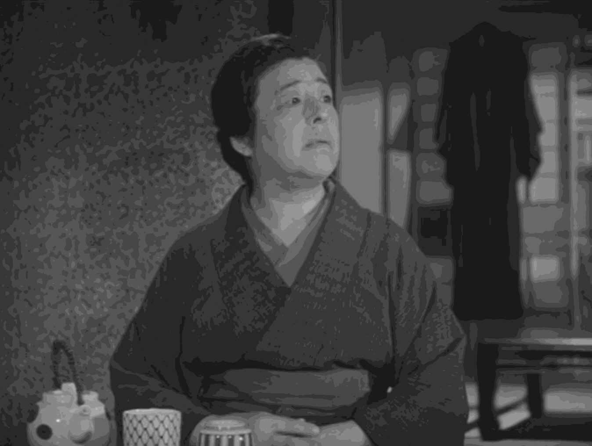
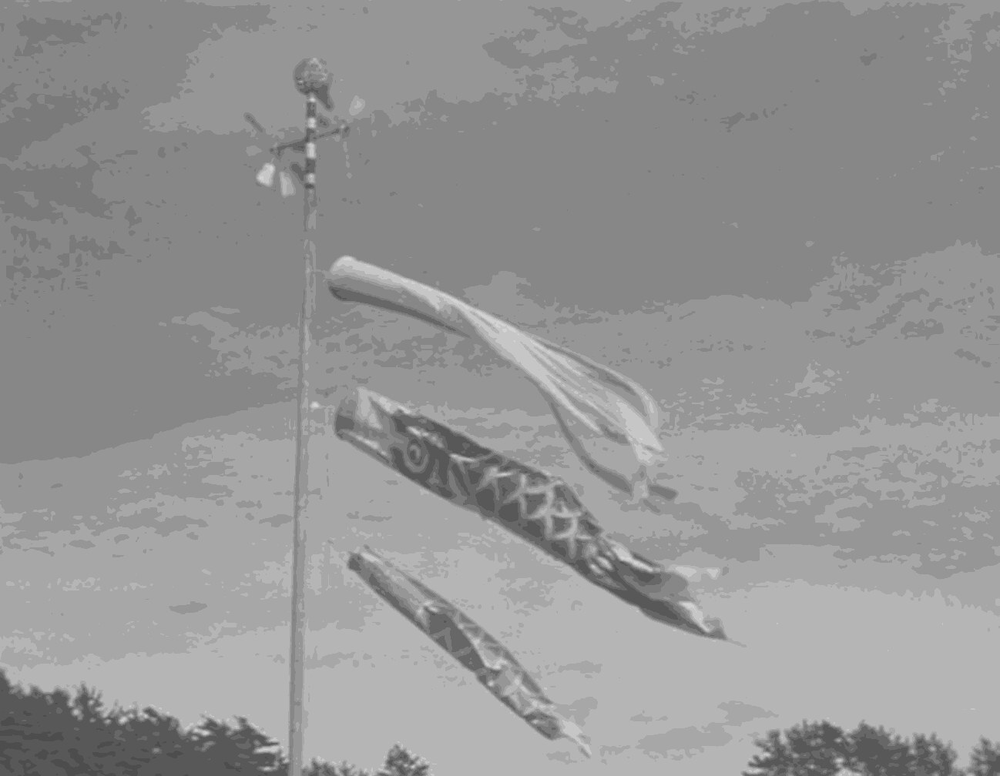
We are somewhat conditioned to believe that being entertained by a movie often is to perceive it as close to reality. But reality and the reality of cinema are two different kinds. Some film directors achieve that facade by concealing the limitations of cinema.
You are the cohort, as well, of this whole facade, or even this reality conspiracy, in that you accept cinema’s intention to be realistic without consciously examining it. Actually the building of this facade cannot be complete without the audience cooperating.
It is in a similar way that we believe there is a standard English, which is actually just the prescriptive grammar we are told to accept as the correct way to talk in school. But there are many ways to speak English differently. You also unconsciously train yourself in which ways movies are supposed to be watched. But there are many different ways to watch and make movies.
“Ordinarily, when using a shot/reverse shot setup to film a conversation … you cut back and forth from the same side of the subjects. … But in Ozu films the camera seems to film one character from this side one minute … and the next minute we cut to the other character filmed from the opposite side. This is not just an impression. It must have been an intentional directorial choice, and it creates the uneasy sensation that, if you were to follow a character’s eyeline, there might not be anyone there on the other end, that every time we have a cut, the other person ceases to be there.” — François Truffaut, interview with Hasumi & Yamada, 1980 (HS, pp. 153–54)
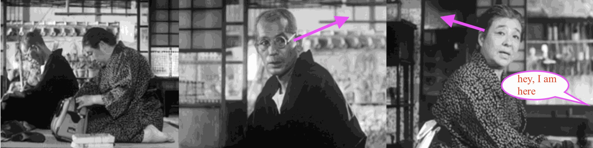
Alongside the tension of mismatched eyelines, Hasumi identifies a counter-movement in Ozu: a “relaxation phenomenon” in which intimate figures sit side by side, often diagonal to the camera, and let their gazes converge on an offscreen object (HS, pp. 158–59).
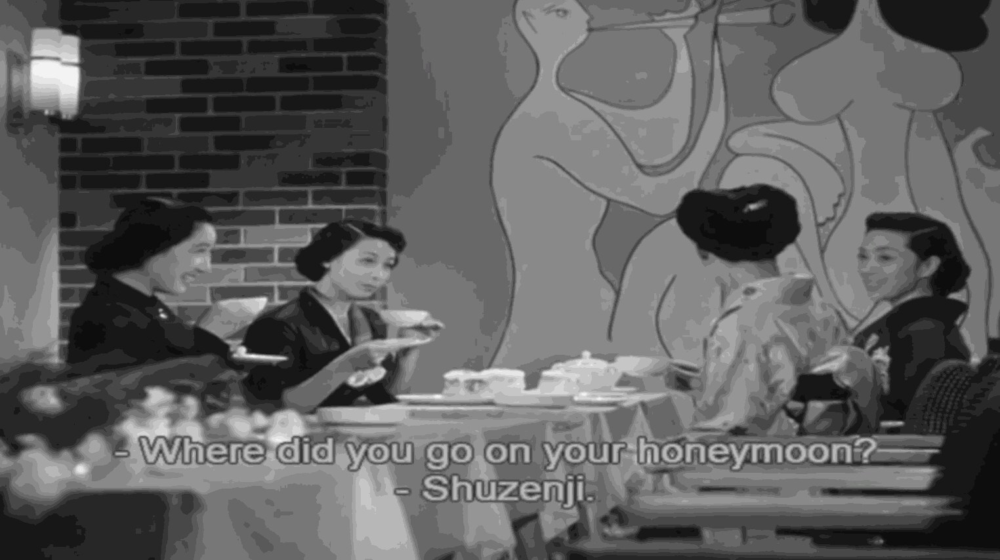
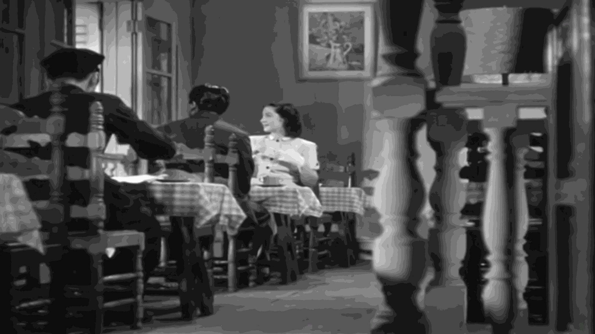
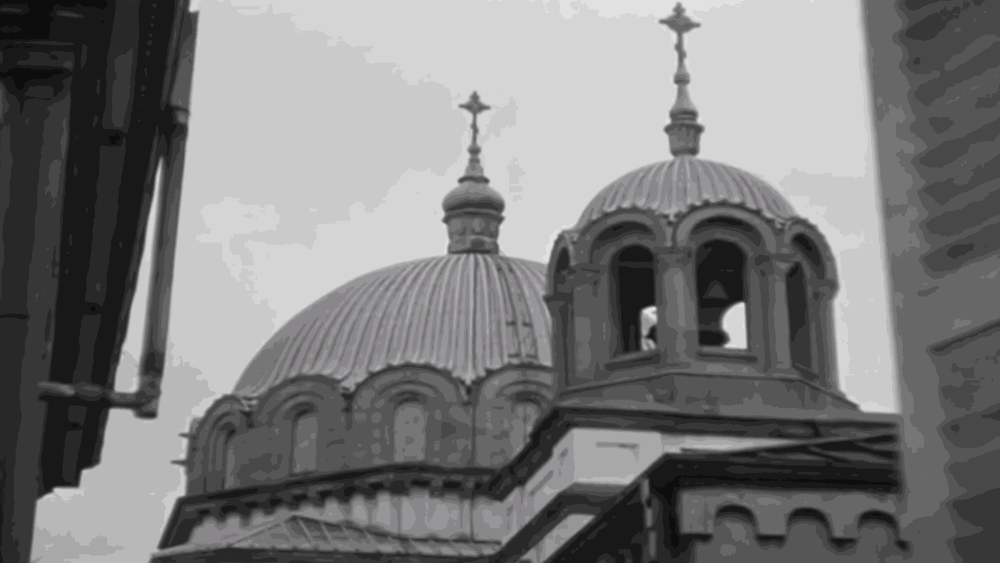
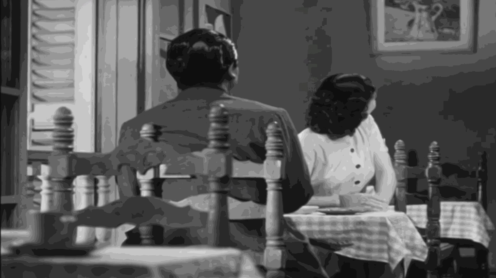
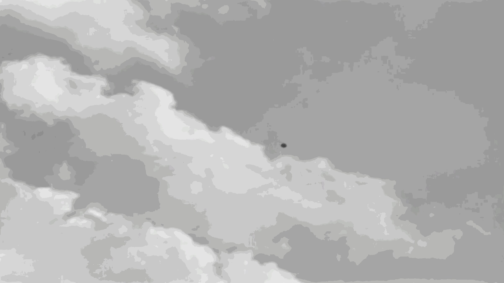
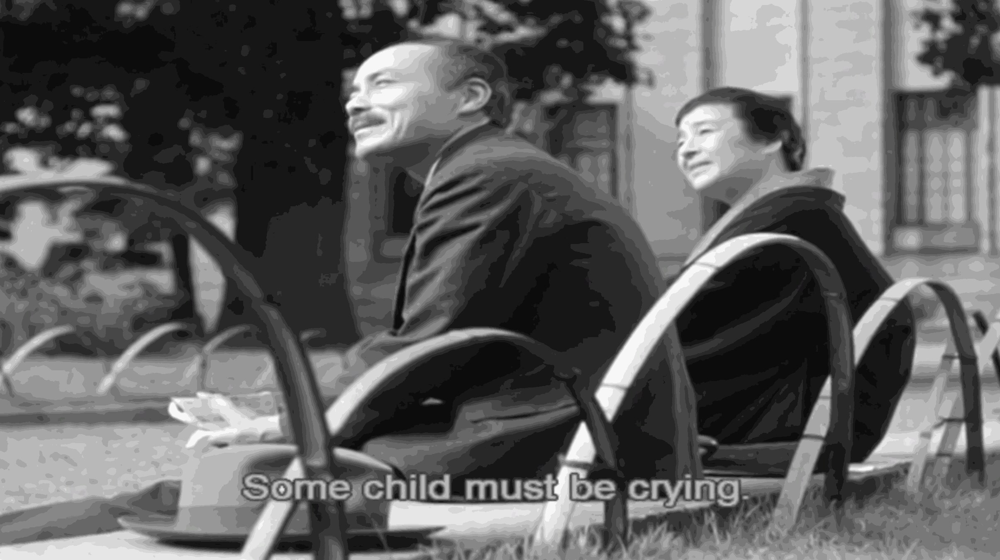
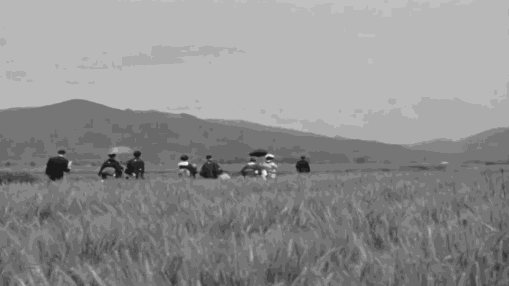
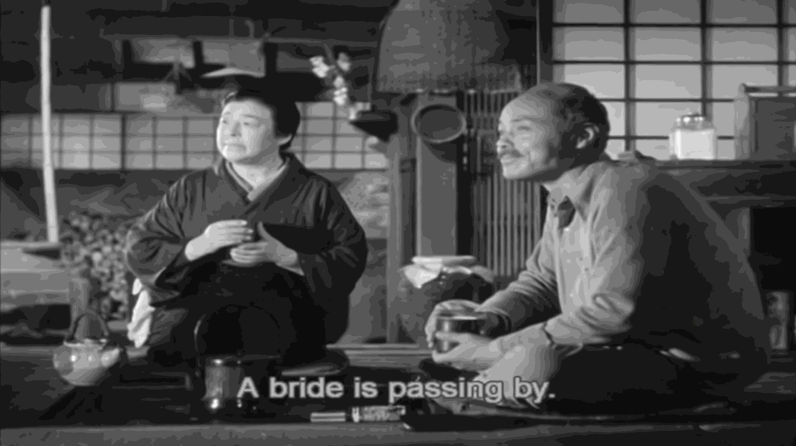
The unifying claim: Ozu’s lyricism is dynamic, never contained by the static properties of the image, and arrives “simply through the gesture of two people fixing their eyes on the same object at the same time” (HS, p. 159), with no symbolic weight attached to the object itself.
The general formula: the subject does not move; the camera does not move; the camera is placed on a moving body (commuter train, streetcar, sightseeing bus, ferry). Stillness becomes the precondition for the most affecting motion (HS, p. 169).
Near the end of Early Summer, three generations of the family pose together for a photograph in the familiar first-floor living room. “On the photographer’s instructions, they pose and hold still” (HS, p. 171). For once Ozu allows the frontal full shot he otherwise avoids: bodies face forward, eyes fix on the same point, motion ceases.
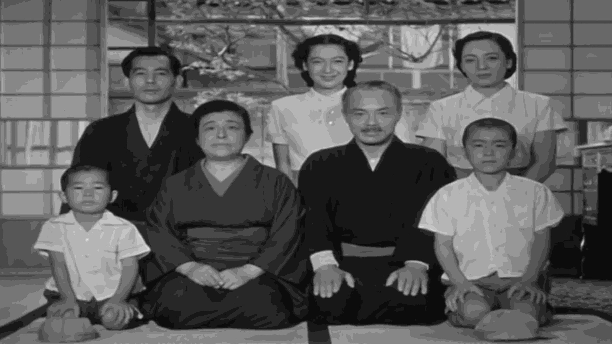
Hasumi reads this as a mirror of our own activity as viewers: “To watch a film is to share the experience of holding still and looking in the same direction as others, much as they do in posing for the camera” (HS, p. 171). They sit in cruel light; we sit in “complicit darkness.”
Hasumi closes the chapter by linking staircases and wedding photographs as twin Ozuesque devices, each ordinarily withheld and shown only when separation must be staged: one in An Autumn Afternoon, the other in Late Autumn.
“We give ourselves over to the flow of the narrative and abandon really looking at the screen. But where we fix our attention deliberately on the screen, our eyes succumb to uncontrollable agitation. To look at an Ozu film is to maintain the eye in a state of constant and continuously renewing agitation. This is an exceptionally cruel experience for cinema itself, since it causes a decisive moment to come closing in, a point where it seems that with even one step farther, cinema might cease to be cinema.” — Shigehiko Hasumi (HS, p. 157)
When we talk about foreign films, we tend to focus mainly on subject matters and material cultures. But how movies are made, how shots are composed and edited, and even imagining how people of the time watched these films are all part of our experience of foreign cinema.
Hasumi insists that “no single Ozu film ever resembles things Ozuesque” (P, p. 4): the easy genre of social reassurance has to be set aside if we want to see the films themselves. What follows are not exemplars of “things Ozuesque” in his sense, but other auteurs whose mise-en-scène shares Ozu’s commitment to compositional pattern and to holding still.
The father of African cinema, Senegalese auteur Ousmane Sembène, demonstrates remarkable control over mise-en-scène, including the placement of people, framing with objects within the screen, and various shot/editing techniques, all of which contribute to his unique compositional style.
Long static shots of Jeanne Dielman, a single mother, going about her daily routines in her tidy apartment quickly establish a compositional pattern on the screen. In some of these long shots, surrounded by mundane objects, the dismalness of her life is captured through her subtle unrest, conveyed by stillness and silence. Her patterned, cinematic life on screen seems to anticipate a demise, much like the dissolution of family often portrayed in Ozu’s films.
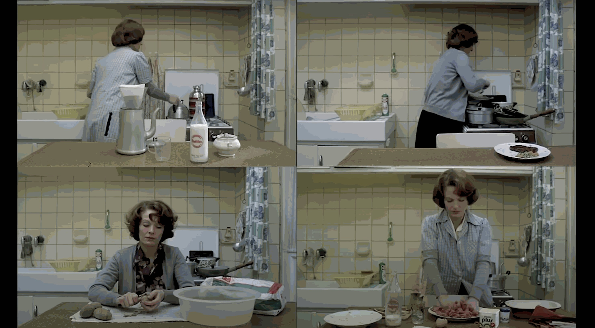
Through long and static shots, Kaurismäki sketches the mundane life of a young woman working at a match factory. Although the film is quiet, her life is filled with misfortune and harsh circumstances. In these slow and silent cinematic spaces, she eventually transforms into a serial killer.
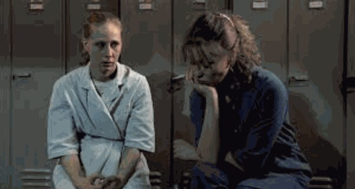